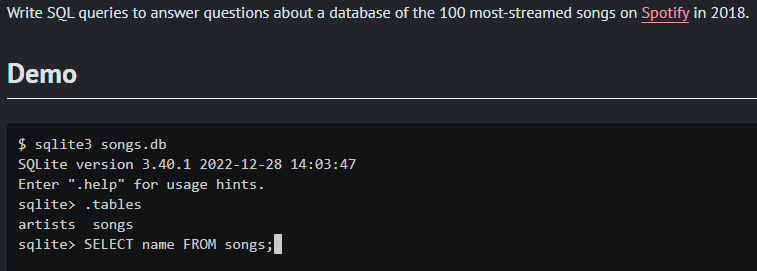
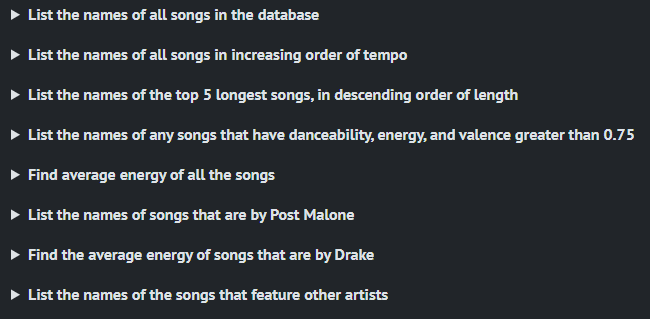
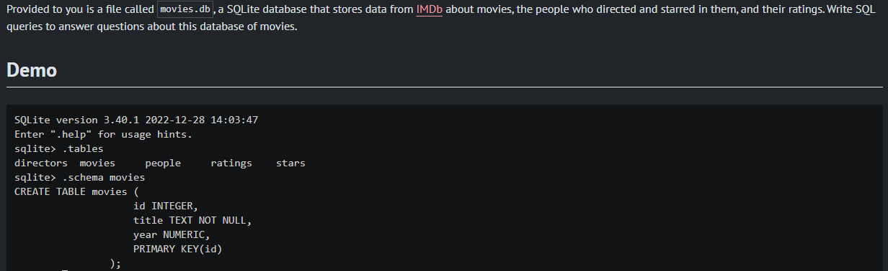
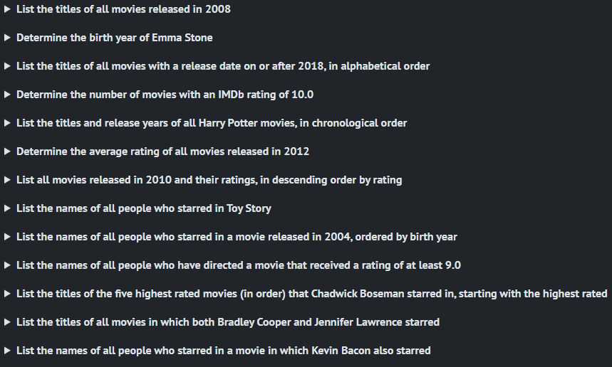
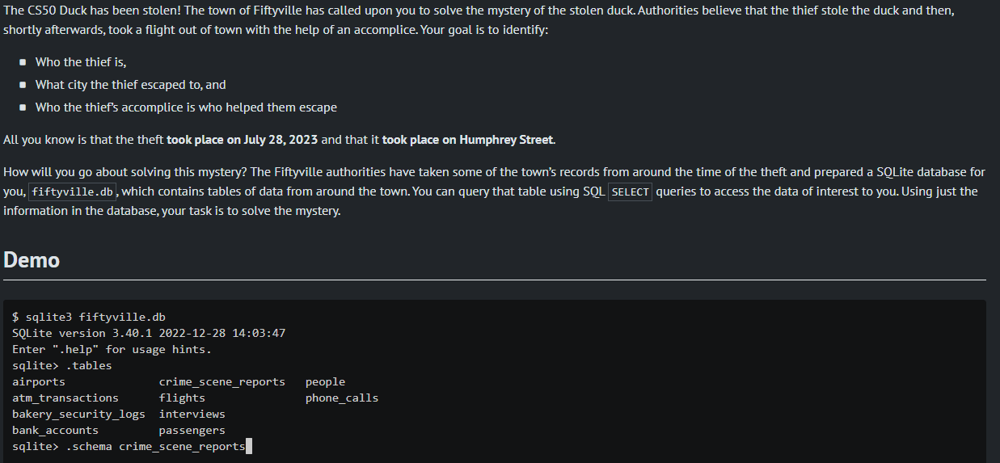

Week 7 - SQL
A great database query programming language. This course taught me how to query databases to search for data and organise it to view it many different ways.
The themes for this week were:
SQL: Tables; Types; Statements; Constraints; Indexes; Keywords, Functions; Transactions. Race Conditionals. SQL Injection Attacks.
Problem Set 1 - Songs
Using Spotify's top 100 streamed songs in 2018, I had to write 8 SQL queries.
Problem Set 2 - Movies
Using IMDB's database of movies, I wrote 13 SQL queries.
Problem Set 3 - Fiftyville
Solving the theft of the cs50 duck in Fiftyville was a lot of fun. The database comported of 10 tables I used to find out who the thief was, where did they escaped to and who helped as an accomplice.
